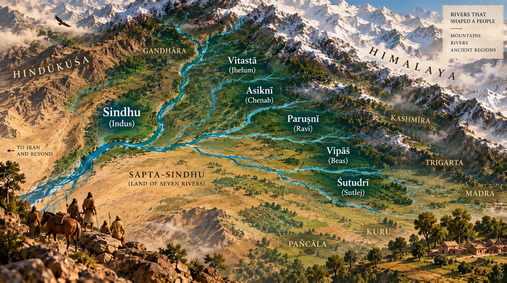
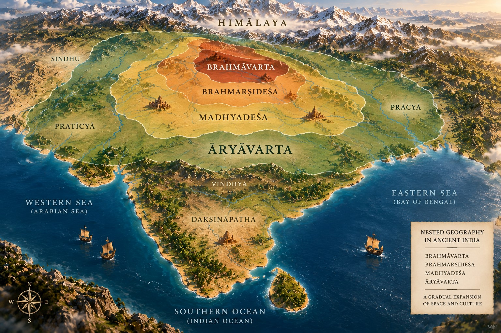
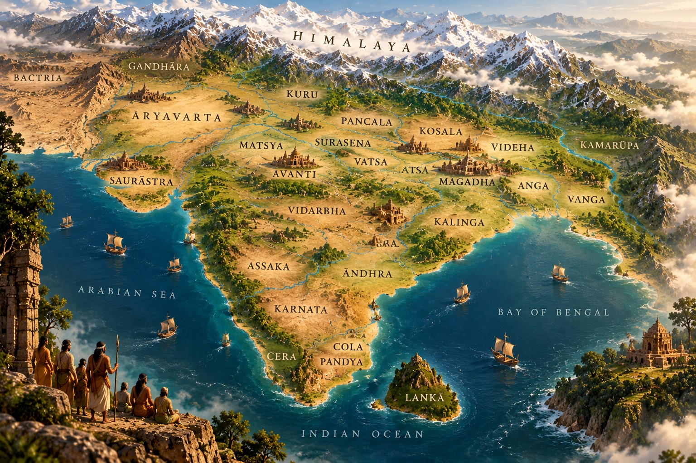
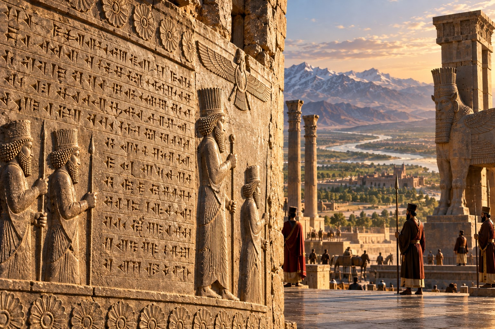
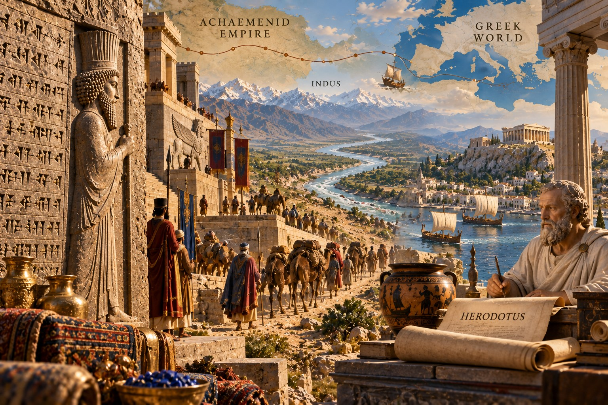
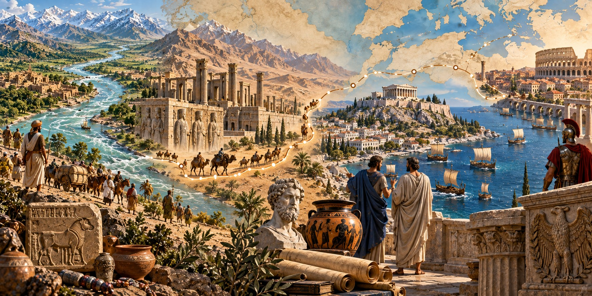
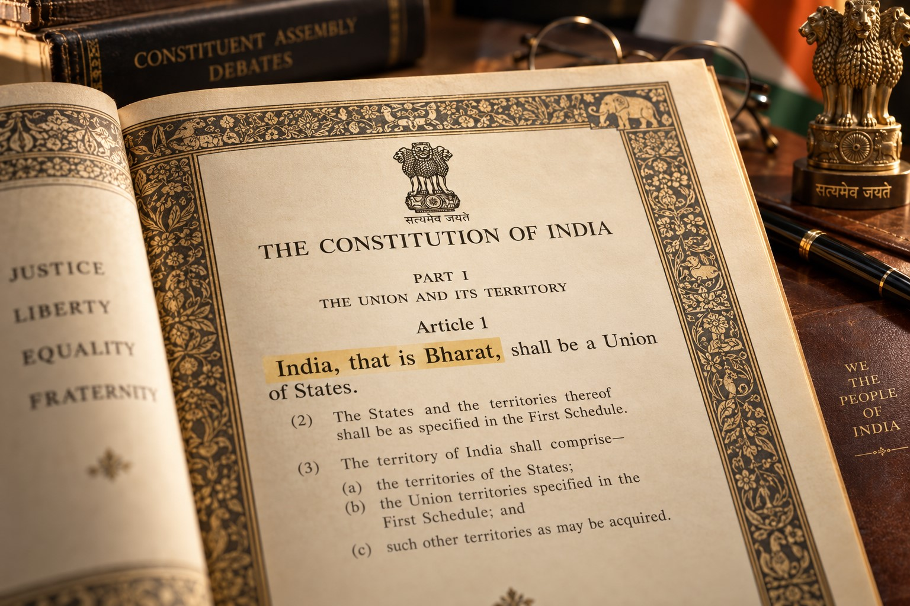
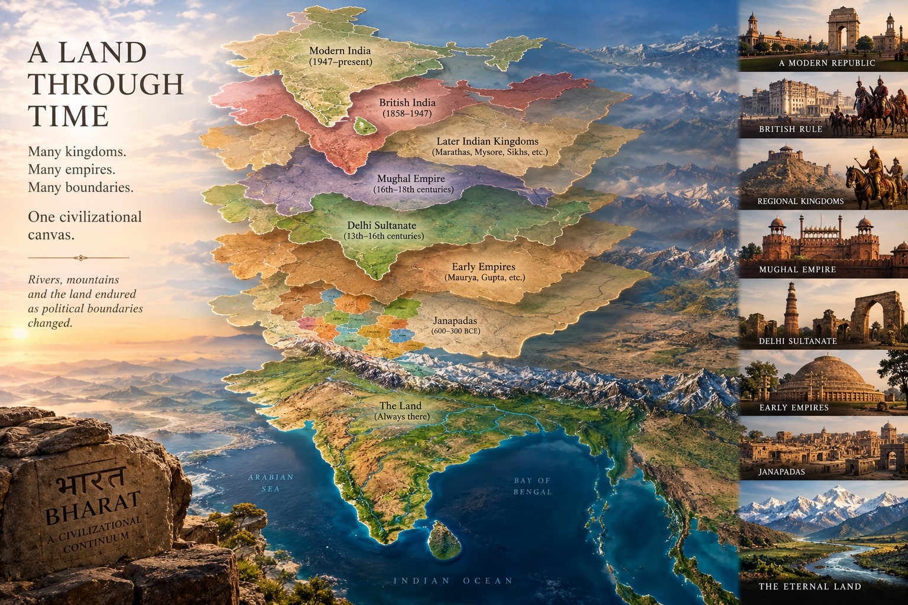

Before India, what did Rama, Krishna and Manu call this land — and where did the two names in our Constitution come from?
Anand Sinha ·
September 2026 ·
Edition [N] ·
~18 min read
WHAT THIS ARTICLE IS ABOUT
The names of countries usually have simple stories. This one has two — and they could hardly be more different.
One name is preserved across the civilization’s own Sanskrit textual traditions, carried through more than two thousand years, from an ancient people crossing the rivers of the Punjab to a verse that defines a land between the Himalaya and the ocean. The other began as a river's name, crossed into Persian, entered Greek, moved into Latin, and returned through European geography as something that sounds completely different from what it started as.
This article follows both names back to their origins: through Rama's Ayodhyā and Krishna's world and Manu's geography, then through the Achaemenid Empire and Herodotus and Rome. It also addresses the familiar claim that India didn't really exist as a coherent place before the British — and explains precisely why that claim confuses several different things that are not the same.
Prologue
Constitution of India · Article 1
India, that is, Bharat, shall be a Union of States.
Four words. Article 1 of the Constitution of India, adopted in 1949 and brought into force on January 26, 1950.
It is a peculiar formulation. Most constitutions simply name their country and move on. The Indian Constitution offers two names at once, joined by two words — that is — that simultaneously equate them and raise a question neither name alone would have provoked. If they mean the same thing, why state both? If they don't quite mean the same thing, which one is the real name?
Where did India come from? Where did Bharat come from? Did they originate at the same time, in the same place, for the same reasons? Did the British give us one, or both, or neither? And before any of that: what did the people who built Ayodhyā and Mathurā and Hastināpura and Dvārakā call the land they lived in?
These are not trivial questions. They are the kind of questions that reveal, depending on how you pursue them, either a civilization with a very shallow memory of itself or one with a memory so deep that most of us have simply stopped looking.
We are going to look. Two names. Two journeys. Follow both until they meet.
1. Walk Into Rama's Ayodhyā
Begin at the beginning of the Rāmāyaṇa.
Before Rama's birth, before the exile, before Lanka, the text pauses to describe the world into which he will be born. The opening verses of the Bāla Kāṇḍa name Kosala — a great janapada, a settled political territory, prosperous and powerful, lying along the river Sarayū. Within Kosala, the text tells us, sat Ayodhyā: twelve yojanas in length, three in breadth, its streets broad, its architecture extraordinary, its stores full.[1]
These are not vague mythological atmospherics. They are geographical claims.
Now suppose you were standing in that city. A traveller arrives and asks: what country is this? The question would have made sense in modern terms only if by "country" you meant something like what kingdom are you in, and the answer would have been: Kosala, ruled by the Ikṣvāku dynasty, seat of government at Ayodhyā. The idea that you would answer with the name of a modern nation-state, complete with a written constitution, a central bank and a permanent seat at the United Nations, would have been incomprehensible. Not because there was no larger world — the Rāmāyaṇa is full of it — but because that particular bureaucratic category did not exist.
Keep that distinction alive. We will need it later.
And then there is the detail that the text slips in almost as an aside, in the very lines where it describes Ayodhyā's founding: the city, it says, was built by Manu — Manu, the ancient lawgiver, the progenitor of humanity in Indic tradition. The Rāmāyaṇa does not explain or linger. It states. Ayodhyā is Manu's city.
We will meet Manu again shortly — not as a city-founder this time, but as a cartographer.
Ayodhyā on the Sarayū — the city Manu built, seat of the Ikṣvāku dynasty, described in the Rāmāyaṇa as twelve yojanas in length · AI-generated illustration
2. Visit Krishna's World
Cross now from Rama's world into Krishna's.
The Mahābhārata describes a landscape crowded with polities, each with its own lineage, its own capital, its own rivalries and alliances. Mathurā, the Yādava seat. Dvārakā, the island city built for the Yādavas when Mathurā became contested. Hastināpura, seat of the Kuru dynasty. Indraprastha, carved from the Khāṇḍava forest for the Pāṇḍavas. Pāñcāla to the north, Magadha to the east under Jarāsandha, Gandhāra far to the northwest. The Deccan exists. The coasts exist. The forests and rivers and mountains of a vast geography all exist.
Different kings. Shifting alliances. War on a scale the text treats as civilizationally decisive.
Now ask the question the text itself seems to invite: why is this epic called the Mahā-Bhārata? Not the Mahā-Kosala. Not the Mahā-Kuru. Not a name drawn from any single kingdom among the dozens it describes. Mahā-Bhārata. The Great Bhārata. The name says something. It will take us a few sections to fully hear what.
The name Bhārata appears in the Ṛgveda — older than the epics, older than the lawgivers — attached not to a land but to a people crossing rivers in the Punjab. Before Bhārat was a country, it was already a very old name.
Continue reading: Tap THE BHARATAS above.
The Land With Two Names
The Bharatas
Before Bhārat was a land, it was already an extraordinarily old name of a people.
Anand Sinha ·
September 2026 ·
The Bharatas
The Bharatas crossing the Vipāś (Beas) and Śutudrī (Sutlej) — the oldest surviving attestation of the name Bharata, in Ṛgveda 3.33 · AI-generated illustration
3. Before Bharat Was a Land, There Were Bharatas
Here is something most accounts of the name skip.
Before Bhārata appears unmistakably as a geographical designation in Sanskrit literature, before any text describes a land called Bhārata, you encounter Bharatas as a people.
The Ṛgveda — among the oldest surviving texts in any Indo-European language — knows them. Two hymns in particular bring the Bharatas to the foreground.[2] In the thirty-third hymn of the third book, the rivers Vipāś and Śutudrī — today's Beas and Sutlej — address a traveller and are addressed in turn. The hymn records the Bharatas crossing these rivers, their chariots and wagons rolling through the water, their journey continuing eastward. It is a scene of movement, of a people in motion through a specific, nameable geography.
The seventh book returns to the Bharatas in the context of the Battle of the Ten Kings, the Daśarājña, one of the oldest military events attested in Sanskrit literature. Sudās, identified in the surrounding hymns with the Bharatas and Ṛtsus, faces a coalition of ten kings at the river Paruṣṇī — today's Ravi — and prevails. What matters here is not the military outcome but what the text takes for granted: the Bharatas exist. They are a recognizable people, present in the Punjab river system, crossing the Beas and the Sutlej, fighting at the Ravi. Their name is already ancient enough to require no introduction.
So before Bhārata is clearly a geography, Bharata is already an extraordinarily old name of a people. How does a people's name become a land's name? The question is not unique to India. The Franks gave their name to France. The Angles to England. But in this case the trail is richer and more tangled than those European parallels, because the Sanskrit textual tradition preserves not one explanation but several — and they do not agree with each other.

The six rivers of the northwestern Punjab system — Sindhu, Vitastā, Asiknī, Paruṣṇī, Vipāś, Śutudrī. One of them will eventually give us the name India · AI-generated illustration
4. Who Was Bharata?
Easy question? Not quite.
The answer that floats most commonly through popular accounts is: Rama's brother. Bharata, Kaikeyī's son, the prince who refused to sit on the throne during Rama's exile and kept his sandals on the throne in symbolic regency instead. A figure of dharmic loyalty and selfless restraint.
Rama's brother Bharata is a moving and important figure in the Rāmāyaṇa. He is simply not a sufficient explanation for the name of a subcontinent. His story offers no mechanism by which a prince's personal name would attach itself to the geography. And the textual traditions themselves offer different answers.
The Mahābhārata preserves Bharata, son of Duṣyanta and Śakuntalā, as a celebrated ancestral figure: the emperor whose line both the Kaurava and Pāṇḍava dynasties claimed descent from. The Mahābhārata calls the lineage whose story it tells the Bharata vaṃśa, the Bharata race or dynasty — and this is how the epic itself gets its name. Kālidāsa would later transform the Duṣyanta and Śakuntalā story into the celebrated Abhijñānaśākuntalam, but the naming of the lineage is the Mahābhārata's own concern.
The Purāṇic tradition offers a different Bharata, older in cosmological time. The Bhāgavata Purāṇa has its own Ṛṣabha–Bharata genealogy: Ṛṣabha, a great primordial king, whose son Bharata becomes the first great sovereign of the age. The Bhāgavata states explicitly that the region had previously been called Ajanābha-varṣa — Ajanābha's region — and that it came to be called Bhārata-varṣa after this Bharata. The Jain tradition independently preserves Ṛṣabhanātha as the first tīrthaṃkara and Bharata as his son, the first cakravartin — an adjacent tradition, not the same textual account.
Three different traditions. Three different Bharatas. The Ṛgvedic Bharatas as a people. The Mahābhārata's Bharata, son of Duṣyanta, who founds a dynasty. The Purāṇic Bharata, son of Ṛṣabha, who names the land itself. The honest answer is that no single tradition can be declared the winner, because the Sanskrit record does not declare one. What the record shows is a name ancient enough, and important enough, that multiple traditions felt the need to account for it.
Forget for a moment which Bharata gave the land its name. The more interesting question is: when does Bhārata become unmistakably geography — not just a people, not just a dynasty, but a named place on a map large enough to encompass the world of the Mahābhārata?
Manu, it turns out, was drawing maps long before the Rāmāyaṇa called him a city-builder. The Manusmṛti describes nested geographical regions — and the Mahābhārata and the Viṣṇu Purāṇa go still further, naming a land bounded by the Himalaya to the north and the ocean to the south.
Continue reading: Tap FINDING BHARAT above.
The Land With Two Names
Finding Bharat
From Manu's nested map to the verse that names a land north of the ocean and south of the mountains.
Anand Sinha ·
September 2026 ·
Finding Bharat
5. Manu Gives Us a Map
The Manusmṛti is best known in the West, and in many contemporary Indian conversations, for its social regulations — particularly those touching caste and gender, which have attracted fierce debate across centuries. But before Manu gets to any of that, he draws a map.
The second chapter of the Manusmṛti describes nested geographical regions, moving from the most specific outward to the largest.[3] First, Brahmāvarta: the land between the Sarasvatī and the Dṛṣadvatī rivers, roughly in the territory of what is today Haryana. This is where, the text says, righteous custom first arose. Then Brahmarṣideśa: a somewhat expanded region that includes Brahmāvarta and its adjoining territories. Then Madhyadeśa, the Middle Country: a broader territory, bounded by named mountains, rivers and forests, extending to encompass much of northern India. And finally Āryāvarta: the land between the Himalaya in the north and the Vindhya in the south, stretching east to the Bay of Bengal and west to the Arabian Sea.
Think of it this way. Troy, Michigan is in Oakland County, which is in the state of Michigan, which is in the Midwest, which is in the United States of America. Each name is real. Each operates at a different scale. The existence of one does not cancel the others. Manu's geography works the same way — different names for different scales, each real, none interchangeable with the others.
Notice the actual boundaries of Āryāvarta: the Himalaya in the north, the Vindhya in the south, and both oceans east and west. You cannot call a space with those bounds a city, or a kingdom, or the territory of a single dynasty. It is a description of a land. Neither is it the same as a modern nation-state with surveyed borders and a passport office — but it is emphatically not nothing.
We are getting closer to what we are looking for.

Manu's nested geography: Brahmāvarta at the centre, expanding outward through Brahmarṣideśa and Madhyadeśa to Āryāvarta — each a real region, each a different scale · AI-generated illustration
6. The Mahābhārata Gets Bigger
Return now to the epic and the question it quietly posed: why Mahā-Bhārata?
The sixth book of the Mahābhārata — the Bhīṣma Parva, named for the patriarch who falls on the great field of Kurukṣetra — contains something that most readers of the popular condensed retellings never encounter: a geography.[4] The text names Bhārata-varṣa and proceeds to describe it. Mountains. Rivers. Peoples. The sweep of the description extends from the Sindhu in the northwest through the Sarasvatī, Yamunā, Gaṅgā, the Narmadā, the Godāvarī, the Kāverī in the south. Peoples are named from multiple regions — northeastern, southeastern, northwestern, southern — in a list that strains to be comprehensive.
This is not the description of Kosala. This is not even the description of the Kuru territories around Hastināpura. This is the description of a geographical space large enough to encompass the dozens of kingdoms that populate the epic's narrative — a space capacious enough to hold them all, give them a common frame and call that frame Bhārata-varṣa.
Varṣa here is important. The word in everyday Sanskrit means "year" or "rain." But in this geographical and cosmological context it means something closer to "realm" or "division" — a region of the earth. Bhārata-varṣa is thus Bhārata's realm, or the Bhārata region. The epic is the great story of the Bhārata lineage — and Bhārata-varṣa is the land in which that story unfolds. The name is doing more work than identifying any single kingdom. It names the canvas on which all the kingdoms are painted.

Bhārata-varṣa: the canvas on which all the kingdoms are painted — mountains, rivers, peoples, from the Sindhu to the Kāverī · AI-generated illustration
7. North of the Ocean. South of the Himalayas.
The Viṣṇu Purāṇa is less read than the Mahābhārata or the Rāmāyaṇa, but it preserves what may be the single most geographically explicit statement about Bhārata in the Sanskrit corpus.
The second book, third chapter, opens with a verse.[5]
The region that lies north of the ocean and south of the Himalaya — that region is called Bhārata, and its descendants are called Bhāratīs.
Viṣṇu Purāṇa 2.3.1
Let that statement settle.
North of the ocean, south of the Himalaya — the single geographical definition preserved in Viṣṇu Purāṇa 2.3.1 · AI-generated illustration
H I M A L A Y A
↓
B H Ā R A T A
↓
O C E A N
This is not a description of a dynasty. It is not the territory of a king. It is not bounded by political allegiances or military reach. It is a geographical description whose landmarks are two of the most permanent features of the natural world: the Himalayan range and the ocean to the south.
The text does not stop there. The surrounding chapters of the Viṣṇu Purāṇa go on to list the mountains within Bhārata-varṣa, the rivers running through it, the peoples inhabiting different parts of it. The verse is not an isolated claim. It is the opening statement of a sustained geographical section.
We have found Bhārata.
But finding Bhārata answers only one of the two questions with which we began. We still have not accounted for the other name in Article 1: India.
Where did India come from?
8. Wait — What About Jambūdvīpa?
Before we cross from one name to the other, a brief detour to clear up a simplification that sometimes appears in popular accounts of this story. "India's ancient name was Jambūdvīpa" — you will encounter this claim occasionally. It is not quite wrong, but it is not quite right either.
Jambūdvīpa — the Island of the Rose-Apple Tree — appears in a cosmographical framework that is present across Hindu, Buddhist and Jain traditions. In this scheme, the inhabited world is conceived as a series of concentric island-continents surrounding a central mountain. Jambūdvīpa is the innermost of these continents, and Bhārata-varṣa is situated within it — one varṣa among several that the cosmography locates on Jambūdvīpa's surface. Jambūdvīpa is thus not another name for the Indian subcontinent. It is the name of a continent-scale cosmographical division within which Bhārata-varṣa is located. Calling Jambūdvīpa "India's ancient name" is a bit like calling "Asia" the ancient name for the Indian subcontinent — meaningful at one scale, misleading at the level most people intend.
The name we are tracking — Bhārata, Bhārata-varṣa — is the specific one. And we have now found it in several independent textual traditions: the Mahābhārata, the Viṣṇu Purāṇa, and the broader Purāṇic tradition generally. Now: the other name.
There is a river. In Sanskrit it is called Sindhu. And this river's name is about to cross a linguistic frontier — through Persia, through Greece, through Rome — until it arrives in Article 1 as the word "India."
Continue reading: Tap WHERE INDIA CAME FROM above.
The Land With Two Names
Where India Came From
A river's name crosses into Persia, enters Greece, travels through Rome — and arrives two thousand years before the British.
Anand Sinha ·
September 2026 ·
Where India Came From
The Sindhu — the great northwestern river whose Sanskrit name, crossing into Persia and then Greece, would become India · AI-generated illustration
9. Start With a River
There is a river.
In Sanskrit it is called Sindhu. The word means "river" or "ocean" in Sanskrit — the large body of water, the great flowing thing. But one river came to own the word so completely that the Sindhu, the river, came to mean specifically the great river in the northwest of the subcontinent: today's Indus. The Sindhu flows through one of the world’s oldest continuously inhabited geographical regions. Long before Persia called its eastern territory Hinduš, the river was already celebrated by name in the Sanskrit tradition.
And the Sindhu's name is about to leave home.
10. Sindhu Crosses Into Persia
Sindhu.
That is where India begins. But Sindhu does not look much like India. So what happened to the S? Where did the H come from? And then where did the H go?
The answer lies in the languages through which the name travelled.
The Achaemenid Persian Empire, at its height in the sixth and fifth centuries BCE under Darius I, administered an eastern province that it called Hinduš.[6] The name appears in Darius’s imperial inscriptions — at Naqsh-e Rostam, at Persepolis and in other royal declarations of dominion over eastern territories after the expansion of Achaemenid control toward the Indus.
The change was not random. Sindhu/Hinduš reflects a well-known sound correspondence between the closely related Indo-Aryan and Iranian branches of Indo-Iranian. The two languages had inherited related words but developed some sounds differently — and the name Sindhu, crossing into the Iranian linguistic world, became Hinduš: the same name, wearing the sounds of a different but related language.

Darius I's imperial inscriptions at Naqsh-e Rostam and Persepolis — where Hinduš first appears as the name of an eastern domain · AI-generated illustration
Notice what this means. The word that will eventually become "Hindu" begins its life not as a religious designation but as a geographical one. In the Achaemenid setting, Hinduš was a geographical designation associated with lands of the Indus region — not the name of a religion. The early history of the word “Hindu” is geographical, not religious. The religious meaning that the word later accumulated is a development of many subsequent centuries.
11. Then Where Did the H Go?
The name travelled west again, this time from Persia into Greece.
Persian Hind- reached the Greeks, who rendered the name in forms such as Indos for the river and Indoi for its people. In the Ionic Greek used by Herodotus, initial h was not pronounced, so the Greek form appears without the Persian initial h. The name now sounded much closer to India than to Sindhu.
Step Two
HINDUŠ → INDOS / INDOI
Old Persian into Greek — the H not carried forward

From Persia to Greece: the name Hinduš arrived in the Ionic world already sounding like Indos — the H dropped by Herodotus's own dialect · AI-generated illustration
Herodotus, writing in the fifth century BCE, knows of "Indians" and of the great river Indos. His Histories describe the Indians as the easternmost of all nations known to the Persians (Book 3). The Scylax expedition — Darius sending a crew down the Indus to the sea — is recorded at Histories 4.44.[7] Herodotus is writing more than a century before Alexander.
The British are still more than two thousand years away.
Greek geographical usage then passed into Latin.
Step Three — the full journey
SINDHU
↓
HINDUŠ
↓
INDOS / INDOI
↓
INDIA
A Sanskrit river name crossed Persia, entered Greece, moved into Latin, and changed its pronunciation along the way.

The full journey: SINDHU → HINDUŠ → INDOS / INDOI → INDIA — a Sanskrit river name that crossed Persia, entered Greece, moved into Latin, and eventually became one of the two constitutional names of modern India · AI-generated illustration
By the time the British encountered the subcontinent, India already had an ancient pedigree in the Greek and Latin geographical tradition and had long since entered European usage.
The British did not transform Sindhu into India. They arrived long after that transformation was complete.
12. Three Familiar Words, One Ancient River
Stop here for a moment, because a reader who has followed this story may have noticed something.
India leads back to Sindhu through Persia and Greece. But what about Hindu? And Hindustan?
Three Roads From the Same Source
SINDHU
↓
HINDUŠ / HIND
↓
HINDU · HIND + STĀN = HINDUSTAN · INDOS → INDIA
Three of the most familiar words for the subcontinent — all tracing toward the same ancient Sanskrit river name, by different roads.
Three of the most familiar words for the subcontinent — India, Hindu, Hindustan — all trace their ancestry toward the same ancient Sanskrit river name. They took different roads. Hindu and Hindustan stayed closer to the Persian intermediate Hind, and were used by Persian-speaking and later Urdu-speaking populations within and beyond the subcontinent. India is the form the name took after passing through Greek and Latin into European languages. But the root is the same river.
One important distinction needs to be made clearly: "Hindu" in the early Persian and Arabic usage was geographical and ethnogeographical — a designation for people from the Indus region — without religious content. The religious meaning of the word — denoting adherents of Indic religious traditions — developed gradually and much later. The early Achaemenid inscriptions say nothing about religion. They say: here is the land and people of the Indus.
And then there is Hindustan. Persian Hind combined with the Persian suffix -stān (meaning "place of" or "land of") to produce Hindustān: the land of the Hind, the land of the Indus people. The word appears in Persian and Urdu literary usage across the medieval period. Its geographical scope shifted across different eras and speakers — sometimes meaning the whole subcontinent, sometimes the northern plains, sometimes the territories under Mughal administration. It was a living geographical term whose borders moved with its speakers and their purposes.
By the time the British arrived, Hindustan was already a word that many of the people living in the subcontinent used for the land they lived in. India had already existed in the Greek, Latin and later European geographical tradition for well over two millennia. The British arrived to find both already in circulation.
13. India Is Born Into the World
Megasthenes, the Greek ambassador who spent years at the Mauryan court of Chandragupta around 300 BCE, titled his account Indikā — "things Indian." The book survives only in fragments quoted by later writers, but its very title tells you that by this point the name India was established Greek usage for the subcontinent as a whole.
The Romans absorbed the Greek geographical vocabulary. Latin writers used India to describe roughly what we would today call South Asia. The word passed through the centuries of the common era into the European languages of the medieval period — into Old French, into the languages of the Italian city-states that funded the spice trade, into the English that the British eventually brought to the subcontinent they called by a name they had inherited from Rome, which had inherited it from Greece, which had heard it from Persia, which had borrowed it from a Sanskrit word for a river.
"India" is, in the deepest sense, a Sanskrit word in European clothing.
Two names had now been traveling for a very long time. It was almost time for them to meet.
The Bhārata-varṣa tradition and the Sindhu-to-India journey are two completely different historical pathways. Putting them side by side reveals something that changes the standard story — and then, on September 18, 1949, the Constituent Assembly took a vote.
Continue reading: Tap WHEN TWO NAMES MET above.
The Land With Two Names
When Two Names Met
Two completely different journeys, one Constitutional sentence, and a vote on September 18, 1949.
Anand Sinha ·
September 2026 ·
When Two Names Met
14. Put the Journeys Side by Side
Step back and look at what has happened.
The Bhārata stream in the Sanskrit tradition — layers in the history of the name
Bharatas — Ṛgvedic people, Punjab river system
↓
Bharata — lineage, dynasty, multiple traditions
↓
Bhārata — the geographical name in the epics
↓
Bhārata-varṣa — the land north of the ocean, south of the Himalaya
These are layers in the history of the name, not a claim that every step derives neatly from the one immediately above it. The history we are tracing here is preserved within Sanskrit textual traditions, developing through people, lineage, land and cosmographical geography — accumulating layers of meaning at each step.
The Outward, Linguistic, Transmission Stream
Sindhu — Sanskrit name for the great northwestern river
↓
Hinduš / Hind — Old Persian, Achaemenid Empire
↓
Indos / Indoi — Greek, Herodotus and after
↓
India — Latin, eventually the European standard
Here is the central insight this article has been building toward: India and Bharat did not originate as two rival political labels contending for the same territory. They are not the "indigenous name" versus the "colonial name," though that framing has become common. They reached the modern period through completely different historical pathways — one internal and textual, one external and linguistic — and they originally described related but not identical things.
The word "India" ultimately traces back to Sindhu, a Sanskrit word. The British did not invent it. They inherited it from a European literary and commercial tradition that stretched back through Rome to Greece to Persia to the Sanskrit word for a river. The name is foreign in form but not in ancestry. And Bhārata — though it developed entirely within the Sanskrit tradition — was not the name that outside observers used for the subcontinent for most of recorded history. Persians called it Hind. Greeks called it India. Medieval Arab geographers called it al-Hind. The name that speakers of Sanskrit and the vernacular languages derived from Sanskrit used for their land was different from the name the world used for the same land. Neither name, in other words, has a simple origin story. Both are richer than they appear.
15. The British Finally Arrive
Notice where we are in this story.
We have followed the Bharatas, Bhārata and Bhārata-varṣa through the Ṛgveda, the Rāmāyaṇa, the Mahābhārata, the Manusmṛti and the Viṣṇu Purāṇa. We have traced "India" through Achaemenid Persian inscriptions and Herodotus and Latin literature and the centuries of Roman commerce with the subcontinent. We have not yet mentioned the British East India Company.
There is a reason for that. The British arrive late. The East India Company received its royal charter in 1600. By that date, Herodotus had been dead for two thousand years. The Viṣṇu Purāṇa's description of Bhārata-varṣa was composed — in its surviving textual layer — somewhere in the early centuries of the common era, perhaps fifteen hundred years before Clive. The Achaemenid inscriptions that first used Hinduš were carved in the fifth century BCE, two thousand years before the Company's first ship.
The British did not invent any of these names. They inherited India from an old European geographical tradition, while Bharat and Hindustan were already established names within the subcontinent through their own different historical pathways.
What the British did do, in the centuries of their administration, was consequential in a different sense. British rule consolidated, standardized, expanded or introduced particular all-India institutions and infrastructures that independent India inherited and transformed: the railway network, centralized legal codes, the Indian Civil Service, the census machinery, the cartographic survey. These are real contributions to the architecture of the modern state, and the framers of the Constitution knew it.
Modern state formation and the naming of a civilization are two different things. British rule profoundly shaped institutions and administrative structures inherited by the modern Indian state. It did not originate the older geographical and civilizational conceptions we have been tracing.
16. Independence Creates a Naming Question
When independence came on August 15, 1947, and the Constituent Assembly set about framing the constitutional identity of the future republic, the naming question acquired new significance: what should the country be called in its Constitution?
This was not a trivial matter, and the people deliberating over it knew it was not trivial. The name of a country is not just an administrative label. It carries history, association, aspiration. Every option that was seriously considered — India, Bharat, Bharatvarsha, Hind — was freighted with implications that different members of the Assembly weighed differently.
India was already the internationally established English name — in diplomacy, maps and international institutions. Bharat was the name rooted in the Sanskrit textual tradition, the name that speakers of Hindi and many other Indian languages used for their own land in their own languages, the name that did not pass through Persia and Greece to arrive here. The Assembly had to choose. On September 18, 1949, it did.
17. September 18, 1949
The Constituent Assembly, September 18, 1949 — H. V. Kamath moves his amendment; B. R. Ambedkar's formulation is adopted as Article 1 · AI-generated illustration
H. V. Kamath of the Central Provinces and Berar rose to move an amendment.[8] He proposed that the country be called "Bharat, or in the English language, India" — not "India, that is, Bharat," the Ambedkar formulation, but the reverse: Bharat first, India as the English translation. Kamath also discussed the ancient traditions behind both names on the floor of the Assembly, invoking the textual heritage we have been tracing through this article. He was not the only one. Seth Govind Das spoke of Bharat and the ancient texts. Govind Ballabh Pant spoke of Bharata and Bharatvarsha and the sankalpa — the Sanskrit ritual formulation — in which Hindus had named their land for generations.
The debate was brief. It was also, in its way, a final act in the naming story that began with the Ṛgvedic Bharatas and ran through the Viṣṇu Purāṇa and Herodotus and Latin to this room in New Delhi.
Constituent Assembly · September 18, 1949 · Kamath Amendment
38
Ayes
51
Noes
The Kamath formulation lost. Ambedkar's language was adopted.

Article 1 of the Constitution of India — inspired by the handwritten illuminated original · AI-generated illustration
Constitution of India · Article 1 · Adopted
India, that is, Bharat, shall be a Union of States.
After extraordinarily different journeys — one through the Sanskrit textual tradition over millennia, one through Persian and Greek and Latin over centuries — the two names were formally placed beside each other, in that order, as the founding sentence of a modern republic.
India, that is, Bharat. Four words. Now you know what each one carries.
But one question remains. If Bhārata was already a geographical conception and India was already an ancient name, what exactly did Britain create? The answer requires separating five things we often confuse. The evidence assembled across this article already contains the response — and the distinction is sharper than most people expect.
Continue reading: Tap THE DEEPER QUESTION above.
The Land With Two Names
The Deeper Question
What Britain created, what it inherited — and what it had nothing to do with.
Anand Sinha ·
September 2026 ·
The Deeper Question
18. "But India Wasn't Even a Country…"
You may have heard it, or a version of it: Before the British, India was just a collection of small kingdoms, kings fighting each other constantly. Britain unified them, gave them modern institutions, and effectively created India as a country. The idea that there was some unified civilization or nation called India or Bharat before Britain is a romantic illusion.
There is something true in this, and something that badly conflates several things that are not the same.
What is true: neither the Mauryan Empire, the Mughal Empire nor British India was the Republic of India. The Mauryan realm came closest to unified subcontinental administration, but even at its greatest extent it did not encompass the whole territory we call India today, and it fragmented within generations. The Mughals administered vast territories with sophisticated bureaucracy and lasted far longer, but the empire too contracted and fragmented over time. And British India was a colonial empire — containing British provinces and hundreds of princely states under differing constitutional arrangements — not a modern democratic sovereign state. The modern Indian state emerged through a long historical process culminating in independence, the political integration of territories, and the Constitution.
But the claim being examined usually implies something larger than the absence of a Republic: that the very idea of India or Bharat as a geographical or civilizational whole is a modern invention — that before Britain gave the subcontinent a common administration, there was nothing that could meaningfully be called India except a confusing patchwork of competing small states. That is a different, and much stronger, claim. And it is where the confusion begins.
19. Five Different Things
Ayodhyā was a city; Kosala, a polity; the Mauryan realm, an empire. Bhārata-varṣa operated at another level entirely — a larger geographical and civilizational conception, present in Sanskrit texts for at least two millennia, naming the land bounded by the Himalaya and the ocean rather than by the authority of any particular king. The Republic of India is something different again: a modern sovereign state, constituted by law and recognized by other states, with written citizenship and surveyed borders.
These are five different things. Confusing them is what produces most of the argument.
A civilization is a broader cultural, linguistic and intellectual tradition that can persist across and outlast particular political arrangements — through shared texts, shared ritual, shared aesthetic traditions, shared philosophical vocabularies. The existence of multiple kingdoms does not prove the absence of a larger geographical or civilizational conception any more than it does in Europe. And evidence for Bhārata-varṣa does not require us to pretend that the Republic of India existed in antiquity — it did not. Both things can be true simultaneously, and in this case both are.
The sovereign territorial nation-state is a relatively modern political form that developed over centuries, especially in early-modern and modern Europe, and spread globally through the nineteenth and twentieth centuries. Most of the world's political entities before that period were not organized on its model, and the absence of that model does not mean the absence of everything else — civilizations, empires, geographic conceptions, shared textual traditions — that existed before it.

Five different things: city, polity, empire, civilization, modern sovereign state — the layered geography of a land that was always more than any single political form · AI-generated illustration
20. The Europe Test
For most of the past two thousand years, the European continent has been politically fragmented — into competing kingdoms, principalities, city-states, empires and, most recently, modern nation-states. Yet Europe’s long political fragmentation does not erase Europe as a geographical reality, nor the historical existence of broader European civilizational traditions.
The standard applied to Europe — political fragmentation does not dissolve geographical or civilizational reality — is the correct standard to apply to the Indian subcontinent as well. And conversely, evidence for Bhārata-varṣa does not require us to pretend that the Republic of India existed unchanged in antiquity. Both things can be true simultaneously. Political fragmentation does not prove civilizational nonexistence. Civilizational consciousness does not prove continuous political unity.
21. What Britain Created — and What It Didn't
British rule consolidated, standardized, expanded or introduced all-India institutions and infrastructures that independent India inherited and transformed: the railway network, legal codes applied across territories, the Indian Civil Service, the census machinery, the cartographic survey. English, which British rule established as a major language of higher administration and education, became the medium in which the Constitution was drafted and in which an educated elite across the subcontinent could communicate across linguistic boundaries. These are not nothing.
But Britain did not create the geographical conception of Bhārata-varṣa — that was already in the Viṣṇu Purāṇa. Britain did not create the Ṛgvedic Bharatas, or the Mahābhārata's geography, or Manu's nested map. Britain did not create the Sanskrit textual tradition that had been naming and describing this land for millennia before Vasco da Gama found a sea route to it. Britain did not create the rivers whose names appear in every hymn and every geography, from the Sindhu to the Sarasvatī to the Gaṅgā to the Godāvarī to the Kāverī.
And Britain — this is the final irony, and it is a good one — did not create the name India. The British inherited India from a European geographical tradition that traced back through Rome to Greece to Persia to the Sanskrit word for a river. Every map of India that a British cartographer ever drew carried, without knowing it, the ghost of the Sanskrit Sindhu.
Epilogue
India, that is, Bharat.
When the Constituent Assembly adopted those words in 1949, they were bringing two historically different naming traditions into the constitutional identity of one modern state.
Kingdoms rose. Kingdoms fell. Empires expanded across the subcontinent and contracted again. Languages shifted, scripts changed, rulers came from inside the tradition and outside it. The Mauryas consolidated. The Mughals administered. The British surveyed. Through all of it, across the centuries in which the political landscape changed as often as the monsoon came and went, two names persisted — one carried in the Sanskrit texts, one carried in the mouths of Persian ambassadors and Greek geographers and Roman merchants.
They met, formally, on September 18, 1949. They were placed together — India, that is, Bharat — and the modern Republic carried both names.
One name, Bhārata, developed within the civilization’s own textual memory — carried from the Ṝgvedic Bharatas through the epics and Purāṇas across millennia, until it named a land between the Himalaya and the ocean. The other began with Sindhu, crossed linguistic frontiers into Persian and Greek, and returned through the world’s vocabulary as India. They took different roads. In the Constitution, they finally met in one sentence.
The British helped shape the modern Indian state. They did not create Bhārata-varṣa.
And they did not even create the name India.
What Did You Think?
Feedback, ratings, and subscriptions go straight to the author.
A Note from the Author
This article took longer to write than most — not because the research was hard to find, but because it required holding several things in mind simultaneously: honesty about political fragmentation, precision about what civilization actually means, fairness to what the British actually did, and fidelity to what the texts actually say rather than what we might wish they said. The story of how two names reached Article 1 is, I think, genuinely better than the simplified versions that circulate in both the nationalist and the colonial register. I hope you find it worth the time.
Writer · Independent Analyst · Founder, The Signal
Anand Sinha is an independent writer and analyst based in Metro Detroit. He publishes The Signal, exploring geopolitics, economics, technology, elections, and civilizational history for readers who want to go beyond the headlines — examining the evidence, questioning conventional narratives, and connecting ideas across disciplines.
His work draws on a career spanning technology, business, and leadership, along with a continuing interest in public policy, history, and the forces shaping America, India, and the wider world.
Every important claim traced back to its primary source. Dating qualifications and scholarly context are placed here so the narrative can breathe.
Anand Sinha ·
September 2026 ·
Sources & Evidence
A. The Rigvedic Bharatas
The Bharatas appear in Ṛgveda 3.33, where the hymn addresses the rivers Vipāś (Beas) and Śutudrī (Sutlej) and describes the Bharatas crossing them. The Bharata/Ṛtsu context around the Battle of the Ten Kings (Daśarājña) appears in Ṛgveda 7.33, with the figure of Sudās prominent in hymns 7.18, 7.19 and surrounding passages. The standard text is the Aufrecht edition (Theodor Aufrecht, Die Hymnen des Rigveda, 1877); modern critical editions are produced under the auspices of the Vishveshvaranand Vedic Research Institute, Hoshiarpur. Modern scholarly translations: Stephanie Jamison and Joel Brereton, The Rigveda (Oxford University Press, 2014), with notes on the Bharata context in Books 3 and 7. The Daśarājña is treated extensively in Michael Witzel, "Early Sanskritization," Electronic Journal of Vedic Studies 1(4), 1995; and in A. A. Macdonell and A. B. Keith, Vedic Index of Names and Subjects (1912).
Dating note: The Ṛgveda is the oldest surviving text of the Indo-Aryan tradition. Most scholars date its composition to roughly 1500–1200 BCE or earlier for the oldest hymns, though absolute dating remains contested. What is unambiguous is that the Ṛgveda is several centuries older than the Achaemenid Empire and considerably older than Herodotus and the classical Greek texts relevant to this article.
B. Rāmāyaṇa Geography — Kosala and Ayodhyā
The description of Kosala as a great janapada on the Sarayū appears at Vālmīki Rāmāyaṇa Bāla Kāṇḍa 1.5.5–6 in the critical edition produced by the Oriental Institute, Baroda (1960–75). The reference to Ayodhyā being built by Manu appears at 1.5.6 of the same passage. The critical edition attempts to reconstruct the earliest recoverable text by comparing the manuscript traditions; its Bāla Kāṇḍa was edited by G. H. Bhatt (1960). Translations used for reference: H. P. Shastri (Shanti Sadan, 1952–59) and the Clay Sanskrit Library edition (NYU Press/JJC Foundation).
Dating note: The Rāmāyaṇa's composition history is complex; the text has a long tradition of growth and regional variation. The core narrative is generally placed by scholars in the later Vedic or early post-Vedic period, though the surviving text reached its present form across many centuries. The article treats the text as a geographical and civilizational document, not a historical chronicle, and does not assign dates to Rama.
C. The Multiple Bharata Traditions
Rigvedic Bharatas: See section A above. Bharata, son of Duṣyanta and Śakuntalā: The central genealogy is established in the Ādi Parva of the Mahābhārata; the Duṣyanta-Śakuntalā story runs at Mbh 1.63–1.73 (Southern recension). The son Bharata is identified as the ancestor of the Kaurava-Pāṇḍava dynasties and the origin of the race name. The article does not invoke Kālidāsa's Abhijñānaśākuntalam in the main narrative beyond naming it as a later literary treatment; the curse-and-recognition device belongs to Kālidāsa, not to the Mahābhārata's version of the story. Bharata, son of Ṛṣabha: Bhāgavata Purāṇa, Skandha 5, chapters 4–7, describes Ṛṣabha and his son Bharata and explicitly states that the region formerly called Ajanābha-varṣa came to be called Bhārata-varṣa after Bharata. The Viṣṇu Purāṇa (2.1) likewise attributes the name. The Jain tradition independently preserves Ṛṣabha as the first tīrthaṃkara and Bharata as first cakravartin.
The article presents these as different traditions that cannot be collapsed into a single authoritative account — the evidence requires this caution.
D. Manusmṛti Geography
The nested geographical descriptions are at Manusmṛti 2.17 (Brahmāvarta, between Sarasvatī and Dṛṣadvatī), 2.18–19 (Brahmarṣideśa), 2.21 (Madhyadeśa), and 2.22 (Āryāvarta, between Himalaya and Vindhya, extending to both seas). Standard critical edition: J. H. Dave, ed., Manu-Smṛti with Nine Commentaries (Bharatiya Vidya Bhavan, 1972–84). The authoritative modern English scholarly edition: Patrick Olivelle, Manu's Code of Law (Oxford University Press, 2005), with original Sanskrit and notes.
Dating note: The Manusmṛti's composition is conventionally placed in the period roughly 200 BCE–200 CE, with complex composition, commentary and transmission history.
E. Mahābhārata / Bhīṣma Parva Geography
The geographical description of Bhārata-varṣa is in the Bhīṣma Parva (Book 6) of the Mahābhārata, in the section known as the Jambudvīpanirdeśa or Bhūmikāparvan. The relevant section runs at 6.9–10 in the Pune Critical Edition (Bhandarkar Oriental Research Institute, completed 1966). The text names Bhārata-varṣa explicitly, lists its mountain ranges, rivers — including Sindhu, Sarasvatī, Yamunā, Gaṅgā, Narmadā, Godāvarī, Kāverī among many others — and its peoples across different regions.
F. Viṣṇu Purāṇa — Bhārata-varṣa Description
Viṣṇu Purāṇa 2.3.1 contains the verse quoted in the article. Sanskrit text from the Gita Press edition (standard accessible text with Hindi commentary). The H. H. Wilson translation (1840) remains widely cited. The verse in full:
Translation: "The region north of the ocean and south of the Himalaya — that region is called Bhārata, and its descendants are called Bhāratīs." The surrounding chapters (VP 2.3–4) list Bhārata-varṣa's mountains, rivers and peoples at length.
Dating note: The Viṣṇu Purāṇa is a layered text whose surviving form is generally placed in the early to mid-first millennium CE, with older materials incorporated.
G. Jambūdvīpa and Its Relationship to Bhārata-varṣa
The cosmographical framework in which Jambūdvīpa is one of several dvīpas appears across the Bhīṣma Parva of the Mahābhārata, the Viṣṇu Purāṇa, the Bhāgavata Purāṇa, and the Jain and Buddhist cosmographical traditions (which share related frameworks). In all of these, Bhārata-varṣa is a varṣa — a division — within Jambūdvīpa, not co-extensive with it.
H. Sindhu — Vedic Usage
The word sindhu in Sanskrit carries the meanings "river" (any large river) and "ocean" as well as the proper name of the northwestern river. Usage in the Ṛgveda for both the river category and specifically the Indus is discussed in Monier Monier-Williams, A Sanskrit-English Dictionary (1899); T. Burrow, The Sanskrit Language (Faber and Faber, 1955).
I. Old Persian Hinduš — Achaemenid Evidence and the Sound Correspondence
On the inscriptions: The term Hinduš appears in Darius I's imperial inscriptions at Naqsh-e Rostam (the DNa inscription), at Persepolis (DPe and related inscriptions), and in other royal declarations of dominion over eastern territories following the Achaemenid expansion toward the Indus valley. It does not appear in the country list of the Behistun Inscription, which predates the eastern expansion and lists Gandāra and other territories rather than Hinduš by name. The inscription texts are established in Roland G. Kent, Old Persian: Grammar, Texts, Lexicon (American Oriental Society, 1953, with later supplements), the standard scholarly reference for Achaemenid Old Persian.
On the sound correspondence: The relationship between Sanskrit Sindhu and Old Persian Hinduš reflects a well-established correspondence between the Indo-Aryan and Iranian branches of the Indo-Iranian language family. The two branches diverged from a common ancestor at some point in the second millennium BCE or earlier. One of the systematic differences between them is that certain consonants that were s in Indo-Aryan appear as h in Iranian in comparable positions — a correspondence that operates across a set of words and is not a simple universal rule that every Sanskrit s becomes Iranian h. The specific Sanskrit-to-Iranian correspondence illustrated by Sindhu/Hinduš is discussed in T. Burrow, The Sanskrit Language (Faber and Faber, 1955); Karl Hoffmann and Bernhard Forssman, Avestische Laut- und Flexionslehre (1996); and Michael Meier-Brügger, Indo-European Linguistics (de Gruyter, 2003).
On the early geographical meaning of Hind-: The geographical/ethnogeographical rather than religious sense of early Hind- and Hinduš is discussed in Romila Thapar, The Penguin History of Early India (2002) and in more specialized scholarship on Achaemenid administration of eastern provinces. The religious meaning of "Hindu" as denoting adherents of Indic traditions developed gradually over many subsequent centuries of usage in Persian, Arabic and eventually Indian-language contexts.
J. Greek Evidence — Herodotus and the Indos
Herodotus, Histories Book 3 (Thalia), sections 94, 98–106, discusses the Indoi (Indians) as a tribute-paying people on the eastern edge of the Persian Empire. The expedition of Scylax down the Indus, sent by Darius to explore the river's course to the sea, is recorded separately at Histories 4.44. Herodotus was writing c. 440 BCE — more than a century before Alexander's campaign (327–325 BCE). Scholarly context: Klaus Karttunen, India in Early Greek Literature (Finnish Oriental Society, 1989). Megasthenes' Indikā (c. 300 BCE), surviving in fragments translated by J. W. McCrindle (1877, reprinted), is the earliest extended Greek account of the Mauryan period.
K. Hind and Hindustan
The Persian Hind and its combination with -stān to produce Hindustān are treated in John T. Platts, A Dictionary of Urdū, Classical Hindī, and English (1884). The varying geographical scope of Hindustan across different periods is noted in C. A. Bayly, Indian Society and the Making of the British Empire (Cambridge University Press, 1988).
L. British Administration and Modern State Formation
Standard scholarly treatments of British India's institutional legacy: Percival Spear, A History of India, Vol. 2 (Penguin, 1965); C. A. Bayly, Indian Society and the Making of the British Empire (CUP, 1988); Sunil Khilnani, The Idea of India (Farrar, Straus and Giroux, 1997); Ramachandra Guha, India After Gandhi (Macmillan, 2007). The East India Company's royal charter was granted in 1600.
M. Constituent Assembly Debate — September 18, 1949
The proceedings are available in the Constituent Assembly Debates: Official Report, published by the Lok Sabha Secretariat (accessible at the Parliament Digital Library). The relevant session is Vol. 10, Part II, September 17–18, 1949. H. V. Kamath's amendment is recorded in the proceedings of September 18. The speeches of Seth Govind Das and Govind Ballabh Pant invoking Bharat, Bharatavarsha and the sankalpa tradition are in the same session. Vote: Ayes 38, Noes 51. Ambedkar's formulation — "India, that is, Bharat, shall be a Union of States" — was adopted as Article 1. Scholarly context: Granville Austin, The Indian Constitution: Cornerstone of a Nation (Oxford University Press, 1966).
This article draws on primary textual sources in Sanskrit, Old Persian and Greek and on standard scholarly editions and translations of those sources. The article aims to distinguish what the primary texts state from later interpretation, and to flag significant uncertainty where the textual or historical record is contested. Where the textual traditions themselves are uncertain or contested — as in the multiple Bharata traditions — the article presents the uncertainty rather than manufacturing a tidy resolution.